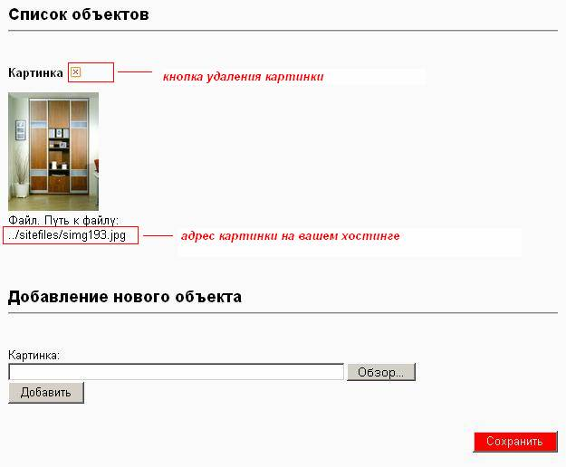

Руководство
пользователя для работы с html редактора –
CMS “Forever site commander”
Доступные возможности редактора.
Жирный текст. Выделите текст и
нажмите кнопку Ж. Текст
выделится жирным. Нажмите кнопку Ж еще раз. Выделение
снимется. Есть клавиатурный аналог, CTRL + B (латинское)
Сдвиг абзаца влево. Если у вас
абзац был сдвинут вправо, то его можно сдвинуть влево
этой кнопкой.
Сдвиг абзаца вправо. Например, вот
так:
word word
word word
word word word word
word word word word
word word word word
Маркированный список:
Нумерованный список:
1.
элемент
первый
2.
элемент
второй
3.
элемент
третий
Нумерованные списки применяются
только в 3-х случаях:
1.
ниже
по тексту планируется ссылаться на номера списка
2.
при
описании действий (шагов), которые нуждаются в точном соблюдении правильной
последовательности
3.
необходимо
подсчитать точное количество пунктов
Во всех остальных случаях предпочтительнее маркированные
списки.
Отмена предыдущего действия.
Можно также воспользоваться
комбинацией клавиш CTRL плюс Z.
Возврат отмененного действия.
Простановка ссылки. Выделите текст,
нажмите кнопку. Появится окошко, введите ссылку в поле "Адрес
ссылки", нажмите "Вставить". Выделенный текст
станет ссылкой.
Поменять ссылку под текстом можно,
если поставить курсор на текст и нажать кнопку для простановки ссылки. В
появившемся окошке поменяйте ссылку и нажмите "Вставить".
Если хотите проставить ссылку,
которая в тексте показывается как ссылка, то просто вставьте ее в текст.
Проследите, чтобы к ней вплотную не примыкал текст, тогда она будет показана
как ссылка.
Удаление ссылки. Поставьте курсор в
текст, оформленный ссылкой, нажмите кнопку удаления ссылки. Ссылка будет
удалена, текст под ссылкой станет обычным текстом.
Вставка картинки с другого
сайта. Найдите подходящую картинку на
другом сайте. Нажимаете на картинке правой кнопкой мышки, из
"Свойств" копируете адрес картинки в буфер обмена. Многие браузеры
имеют на такой случай специальный пункт "Копировать ссылку на
изображение".
В сообщении ставите курсор туда, где
должна быть картинка. Нажмите кнопку с изображением дерева, . Появится
окошко, в поле "Адрес картинки" укажите адрес картинки из буфера
обмена. Напишите подпись к картинке в поле "Описание картинки".
Задайте выравнивание картинки "Вправо", чтобы небольшая картинка (до
300 пикселей) была встроена в текст и он ее красиво
обтекал. Картинки от 300 до 500 пикселей указываются в отдельном абзаце.
Вставьте курсор в одно из полей
"Размеры". Подождите несколько секунд, будет
подгружена картинка и в поле Размеры будут проставлены ее размеры. Если
был задано выравнивание текста "Вправо", то укажите горизонтальный
отступ в поле "Размеры" равный 5 (пикселей).
После такой подготовки нажмите кнопку
"Вставить". Окно закроется, картинка появится в указанном месте.
Подготовка
картинок
Для вставки фотографии со своего компьютера ее сначала нужно
загрузить на ваш хостинг.

После загрузки вы получите адрес, по которому расположена
картинка. Этот адрес используйте для вставки.
Подобным образом можно загружать любой файл (.doc , .pdf
и т.п.)
Спецсимволы. Нажмите на кнопку
"омега". В окошке нажмите нужный символ. Он будет вставлен в то
место, где стоял курсор. За один раз можно вставить несколько спецсимволов.
После вставки закройте окошко с помощью крестика в левом верхнем углу.
Образцы некоторых из 200 доступных
спецсимволов:
© ™ ? € ? © ® ™ ‰ ·
• … ? ? §
¶ ? « » ¤ ¦ ± °
f † ‡
...
Вставка текста из редактора Word.
Большие тексты набираются заранее в Word. Напрямую вставлять его в редактор сообщений нельзя. Word использует при оформлении много лишних тэгов, которые
будут мешать при просмотре в сообщении на сайте. Нужно удалить все ненужное
форматирование, которое делает Word:
Операция вставки текста из Word через кнопку занимает ровно
30 секунд, но значительно качество текста в сообщении по сравнению с прямой
загрузкой текста из Word.
Можно использовать кнопку для вставки
любого текста из буфера обмена, куда вы кладете копии со страниц с других сайтов,
из других визуальных редакторов, из E-mail,...